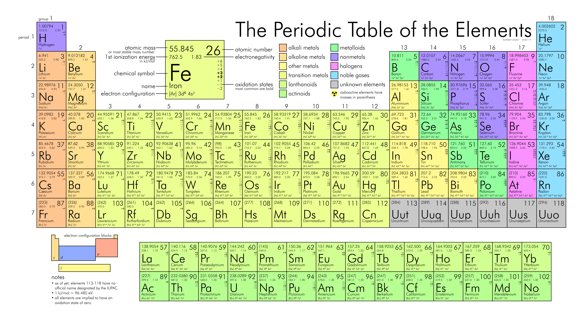

Chemical symbol, Atomic Number, Mass Number and Isotopes :
In this section, we will identify the Chemical Symbol, the Atomic Number, mass number and the
Isotopes in the periodic table. The following is a notation of the Chemical Symbol(X), Atomic number(Z),
and the Mass number(A).
AZ
X
This section will discuss the Chemical Symbol in the periodic table,
the atomic Number symbol, and the Mass number symbol.
Using those three topic, we will be
able to calculate the isotopes of a given element.
The following formula is a repersentation of the Element in the periodic table.
X → corresponds to the chemical symbol of the element in the periodic table.
Z → corresponds to Atomic number, the atomic number corresponds to the number of protons (p)
A → corresponds to the Mass number.
A = number of protons (p) + number of neutrons (n)
The Mass number which is denoted as (A) can varie depending if the element undergoes Isotopes .
Definition: Isotopes is the increase of neutrons in an element.
The element Neon experinces Isotopes. Isotopes will change the value of
of (amu), therefore the (amu) will change based on the amount of neutrons that is added to the atom.
Element name: Neon
X=Element Symbol: Ne
Z=Number of protons: 10
A=Mass Number= protons + neutrons= 20
Atomic Mass Unit: 20.180 amu
Number of Electrons: 10
Number of neutrons: 10
2010
Ne
2110
Ne
1022
Ne
Neon in its current state has the mass number (A) of 20 with the total number of neutrons= 10 → 90.48% natural abundance
Neon can have the mass number (A) of 21, where (A) gains a signal neutron with total number of neutrons=11 → 0.27% natural abundance
Neon can have the mass number (A) of 22, where (A) gains a pair of neutrons with total number of neutron=12 → 9.25% natural abundance Note the atomic number does not change, the atomic number is the same as the number of protons.
The Discovery of Electrons
Electrons were discovered during the cathode rays experiment. The cathode rays
are produced when a high volatage is applied between two electrodes within
a partially evacuted glass tube. The cathode rays emitted a negtively charged
electrode, the cathode traveled to the positively charged electrode. When the
electrodes collided, it create a flash light, otherwise known as a particle blast.
The discovery of the electrons led the discovery of electrostatic forces. electrostatic forces is a particle that experiences attractive or repulsive forces
with other electrically charged particles. The mass of an Electron is measure
through coulombs (c). The charge to mass ratio of
particle within cathode rays by deflecting them using electric and maganitic filed.
A single electron charge weighs -1.76 * 108coulombs (c).
Electrons are a negtively charged, low mass particle existing within all atoms. Suppose, we are given a electron
charge with the value of -1.60 * 10-19 coulombs (c), and we are asked to convert the
the charge to mass. Charge * Mass Charge =-1.60*10-19C
* 1g -1.76*108 C = 9.10 * 10-28g
Nuclear Theory
Most of the atom's mass and all of its positive charges are contained in a small
called the nuclus.
Most of the volume of the atom is empty space, throughout which tiny, negtively charged
electrons are dispersed.
There are many negatively charged electrons outside the nucleus as there are psoitively charged particles (named proton) within the nucleus,
hence the atom is electrically neutral.
Neutrons
is the neutral particle within the nuclus. The neutrons carry 99.9%
of the mass of an atom.
Question :
Given the Symbol "C" which corresponds to carbon,
Suppose that carbon has 7 neutrons
What is atomic number (Z), and the mass number (A)?
Let (n) be the number of neutrons, (Z) be the atomic number, and (A) be the mass number:
Enter the value for (n) =
Enter the value for (Z) =
The Laws of Definite Proportions
This section will discuss the Laws of Definite proportions, the laws of definite proportions
will calculate the ratio of a single Compound . A Compound is when two elements
are bonded to each other. The Laws of Definite Proportions will uses the atomic mass unit
(amu) which is located underneath the Chemical symbol or the Element X in the periodic table.
"The Laws of the Definite Proportions states that all samples
of a given compound , regardless of their source or how they
they are prepared, have the same proportions of their constituent
elements "
Suppose that we are given the compound H 2O,
which is the chemical symbol for hydrogen dioxide and we want to apply the laws of definite proportions:
The atomic mass unit for Hydrogen → H = 1.00 amu
The atomic mass unit for Oxygen → O = 16.00 amu H 2 = 2( 1.00amu) = 2.00amu O = 16.00 amu
The atomic mass unit (amu) will be substitued in grams (g), hence: Mass ratio = 16.00 g oxygen 2.00 g hydrogen = 8.0 → 8:1
Suppose that we are given the the compound NH3, which is the chemical symbol for Ammonia and we want to apply the laws ofd definite proportions:
The atomic mass unit for Nitrogen → N = 14.01 amu
The atomic mass unite for Hydrogen → H = 1.00 amu N = 14.01amu H3 = 3.00 amu
The atomic mass unit (amu) will be substitued in grams (g), hence: Mass ratio = 14.00 g Nitrogen 3.00 g hydrogen = 4.7 → 4.7:1
The Law of Definite Proportions equation: Mass ratio = Bigger Sample Smaller Sample
The Law of Definite proportions will take two samples of a single element.
The Bigger sample will be divided by the Smaller sample giving the mass ration.
Question :
In this example, we are given two samples:
The first sample produces 25.6 g of oxygen and 9.60 g of carbon.
The second sample produces 21.6 g of oxygen and 9.10 g of carbon.
Find the mass ratio for first sample and the second sample.
Mass ratio =
The Law of Multiple Proportions
This section will discuss the laws of Multiple Proportion, the laws of Multiple Proportion is used to calculate the mass ratio of multiple compound. A Compound is when two elements
are bonded to each other. The Laws of Definite Proportions will uses the atomic mass unit
(amu) which is located underneath the Chemical symbol or the Element X in the periodic table.
" The law of multiple proportions states that when two elements (call them A and B ) form two different compounds,
the masses of element B that combine with 1 g of element A can be expressed as a ratio of small whole number. "
Suppose the we are given the following compound:
The first compound CO corresponds to
carbon monoxide.
The second compound CO2
corresponds to carbon dioxide.
In the lab, you are given two samples of each of the compounds.
The CO2 has the mass of 2.69g, while the CO has the mass 1.33g.
Notice how the two compounds has the sample element but differ
the amount of oxygen atoms. The law of multiple proportions
will calculate the ratio of carbon with in respect of CO and CO2.
Mass ratio = Bigger Sample Smaller Sample
Mass ratio = 2.67 g CO21.33 g CO = 2.00 → 2:1
Question :
Suppose we are given two samples:
The first sample is nitrogen dioxide, the nitrogen oxide contains the mass of 2.28g per 1.00 g of oxygen.
The second sample is dinitrogen monoxide, the dinigtrogen
monoxide contains the mass of 0.570g per 1.00 g oxygen.
Find the law of multiple proportions:
Mass ratio =
Ions
This section will discuss ions, ions is when element loses or the gain of an electron.
There are two types of ions: Cation- is when an element undergoes a chemical reaction, and the elements loses an electron,
Causing the element to have a (+) charge.
Anions- is when an element undergoes a chemical reaction, and the elements gains an electron,
Causing the element to gain a (-) charge.
Consider the element "Lithium" before and after a chemical reaction
Before Lithium undergoes a chemical reaction:
Neutral Lithium → Li
Element name: Lithium
X=Element Symbol: Li
Z=Number of protons: 3
A=Mass Number= protons + neutrons= 6
Atomic Mass: 6.94 amu
Number of Electrons: 3
Number of neutrons: 3
Li → Li+ + 1 e-
After Lithium undergoes a chemical reaction:
Lithium+ → Li+
Element name: Lithium
X=Element Symbol: Li
Z=Number of protons: 3
A=Mass Number= protons + neutrons= 6
Atomic Mass: 6.94 amu
Number of Electrons: 2 ← an electron is lost.
Number of neutrons: 3
Therefore, Lithium is a cation.
Consider the element "Flourine" before and after undergoing a chemical reaction.
Flourine before a chemical reaction:
Element name: Flourine
X=Element Symbol: F
Z=Number of protons: 9
A=Mass Number= protons + neutrons= 18
Atomic Mass: 18.998 amu
Number of Electrons: 9
Number of Neutrons: 9
F + 1 e- → F -
Flourine after a chemical reaction:
Flourine- → F-
Element name: Flourine
X=Element Symbol: F
Z=Number of protons: 9
A=Mass Number= protons + neutrons= 18
Atomic Mass: 18.998 amu
Number of Electrons: 10 ← An electron was gained.
Number of Neutrons: 9
Therefore, Flourine gains an electron making Flourine an anion.
Periodic Table
This section will discuss Metals, Nonmetals, metalliods, transition metals, main groups , and noble gases.

Metal → are found in the lower left section of the periodic table to the middle of the periodic table.
Metals are good conductors of heat and electricity and they tend to lose an electron during a chemical reaction.
Metals include all Alkali Metals , Alkaline earth metals, and
Transition Metals
.
None Metals → are poor conductors of heat and electricity, none metals are located
between the metals and the none metals
at the upper right side near the zigzag diagonal line running from Borne to Astatine. None metals tend to gain an electron when it undergoes a chemical change.
Metalloids → are located at the zigzag in the periodic table. Metalloids are
semi-conductors because their intermediate electrical conductivity.
Transition Metal → are located in the middle of the periodic table, their behavior are unpredictable
a lot of the elements that are in the transition metals expreince half-life, which means that these elements are using in nuclear theory.
Transition metals behavior depends on which column of the periodic table they are in.
Noble Gases → are mostly unreactive, Noble gases are located in 8A. Helium does not form into a compound or
mix with any elements in the periodic table.
Alkali Metals → are all reactive metals located at group 1A.
Alkali Earth Metal → are fairly reactive located at group 2A.
Halogens → are very reactive nonmetals located at group 7A.
Isotopes Atomic Mass Calculations
This section will discuss the calculation of an atomic mass.
When an element experinces the principle of an Isotopes, the mass of the
an element can vary. Take for example the element Cholorine, Cholorine has an atomic mass unit of
35.45 amu. When Cholorine undergoes the principle of Isotope, the atomic mass unit and the natrual abundance change.
This will lead to calculating the Isotope Mass Calculation.
Suppose that we are given Chlorine that is exhibiting an isotope where the natrual abundance of the chlorine element is 75.77%,
the Chlorine contains 35 atoms, a mass unit of (34.97 amu) and experinces an additional neutron. Suppose that we are given as second
Cholrine contains 37 atoms, a mass unit of (36.97 amu) and experinces an additional 3 neutrons.
Atomic Mass = ∑n (Fraction of Isotope n ) X (Mass of the Isotopes n )=(0.7577)(34.97amu) + (0.2423) = 35.45 amu
Atomic Mass Formula:
Atomic Mass = ∑n (Fraction of Isotope n ) X (Mass of the Isotopes n ) = (fraction of isotope 1 X mass of isotope 1) + (fraction of isotope 2 X mass of isotope 2) + ... + (fraction of isotope n X mass of isotope n )
The first step is turn the percentage for the natrual abundance into decimal.
The second step is to use the formula above to multiple the decimal percentage
of the natrual abundance that corresponds to the Atomic mass unit (amu).
The third step is to take the sum of each (Fraction of Isotope n ) X (Mass of the Isotopes n )
(fraction of isotope 1 X mass of isotope 1) + (fraction of isotope 2 X mass of isotope 2)
Question:
Copper has two naturally occuring isotopes:
The first copper isotope is Cu-63 with the mass of 62.9396 amu and a natural abundance of 69.17%
The second copper isotope is Cu-65 with the mass 64.9278 amu and a natural abundance of 30.83%.
Calculate the atomic mass of copper. Fraction of Cu-63 = 100 = Fraction of Cu-65 = 100 = Atomic Mass unit of Cu-63 = Atomic Mass unit of Cu-65 = Atomic Mass =
Molar Mass- Avogadro's Number
This section will discuss the unit of measurement called moles. Moles is the measurement that is used to calculate atoms, molecules, and elements.
1 mol = 6.022 x 1023 particles
Moles are used to convert measurements from Moles to Particles/atoms.
moles are also used to convert from moles to atomic mass unit (amu).
Moles = mass (g)Molar Mass (g/mol)
Therefore, Atomic Mass Unit is is measured in grams per mole (g/mol).
Atomic Mass Unit = amu = molar → (g/mol)
Example:
Suppose that we are given 2.45 mol of copper(Cu) and we want to calculate amount of particles/atoms.
(Converting moles → particles/atoms)
2.45 mol Cu 1 =
6.022 x 1023 Cu atoms
1 mol Cu = 1.48 x 1024 Cu atoms
Example:
Suppose that we want to calculate the amount of carbon that is in the a lead pencil
There is 0.0265g of carbon in the lead pencil, and we are asked to calculate the amount
of grams of carbon into moles?
(converting from given gram (g) → amu (g) → moles (m) )
0.0265 g C 1 =
1 mol C12.01 g C =
2.21 x 10-3 mol C
Note that when we are inputting significated figures in the input
that we will need to rewrite "6.022 x 1023" as "6.022e23".
Example:
Given 2.45 mol Cu, convert the 2.45 mol Cu to Cu atoms.
Unit measurement to solve the problem:
1 mol = 6.022 x 1023 particles/atoms
mol cu1*
6.022e23 Cu atomsmol Cu →
Example:
Given 35.8g of copper, convert grams of copper into moles.
Hint → (1 mole = 63.55 amu or 63.55 g/mol Cu) .
g Cu
1
*
mole Cu g Cu
=
Example:
Suppose that you are given the a sliver ring that contains 2.80 x 1022 of atoms/particles of Ag
Calculate how many moles the silver contains?
Hint → (1 moles = 6.022 x 1023 atoms/particles).
atoms Ag 1
* moles Ag atoms Ag =
Example:
Given 3.10 g Cu, How many atoms are contained in Cu?
Hint → ( 1 moles = 63.55 g/mol = 6.022 x 1023 atoms )
g Cu
1
*
mol Cu
g Cu
*
Cu atoms
mol Cu
=
Example:
An aluminum sphere contains 8.55 x 1022 aluminum atoms.
What is the radius of the sphere in cm?
Suppose the density of aluminum is 2.70 g/cm3.
Given:
8.55 x 1022 Al atom d= 2.70 Al g/cm3 → 2.70 g Al = 1 Al cm3
Al molar mass (amu) = 26.98 g/mol → 1 Al mol= 26.98 Al g ( Convert from atoms → mol → g → cm3 )
Al atom
1
*
Al mol
Al atom
*
Al g
Al mol
*
cm3
Al g
=
Formula for a sphere:
V =
4
3
π r3
Find the radius (r),
Solve for r:
3V = 4π r
3 →
3V4π =
r3 → ( 3 cm 3 4 π )13= r =
Example:
A titanium cube contains 2.86 x 1023 atoms. What is the edge length of the cube?
The density of titanium is 4.50 g/cm3
Given:
Ti → 47.87 amu → 47.87 g/mol → 1 mol= 47.87g
Ti → 2.86 x 1023 atom
1 mol = 6.022 x 1023 atom
Ti d → 4.50 g/cm3
Equation for a cube: V= x3 = x*x*x
Ti atom 1 *
mol Ti atom Ti *
g Ti mol Ti *
cm3 Ti g Ti =
Example:
Find the number of atoms in copper rod with a length of 9.85 cm and radius of 1.05 cm.
The density of copper is 8.96 g/cm3.
Given:
A rod is the shape of a cylinder
Formula for a cylinder:
V= π r2 h
h= 9.85 cm
r= 1.05 cm d= 8.96 g/cm Cu3 → 8.96g Cu= 1 cm3Cu
Cu= 63.55 → 1 mole Cu = 63.55 g Cu
1 mole = 6.022 x 1023 atoms
(Converting from cm3 → g → mol → atoms)
VCu rod= π 2 =
cm3 Cu
1
*
g Cu
cm3 Cu
*
mol Cu
g Cu
*
atom Cu mol Cu =